Overview
Build an excavated stairwell and a new underground level opens beneath your base: a solid stratum of mineable rock under a thick roof, ready to be carved into bedrooms, workshops, and freezers. Research building up and a tower stairwell frames outdoor Level +1 as a roof deck above. With Odyssey, dedicated gravship stairwells open ship-linked floors that travel with the launch.
The fluidity engine
What makes Strata different from older multi-level mods: instead of treating each floor as an island, colonists relay themselves between levels on their own. You designate, they commute.
| Relay | Behavior |
|---|---|
| Work | Idle colonists notice mining and plant designations, blueprints, hauling, and bills on other levels and commute down (or up) the stairs to do the work |
| Food | Hungry pawns go find a meal on another level instead of starving next to a staircase |
| Rest | Sleepy pawns walk home to their own bed — or to any level with a free bed to claim |
| Haul | Storage priority works across the whole base: an item goes to whichever level's storage has the highest accepting priority — a Critical freezer two floors down outranks the Low pile by the door. Haul designations (stone chunks and the like) travel with the cargo, so nothing needs re-marking after the trip |
| Rituals | The ritual menu lists colonists from every linked level; participants elsewhere walk to the ritual through the stairwells and join with their assigned role when they arrive. Prisoners and animals get escorted. |
| Medical | Patients head for free medical beds on other floors; doctors commute to tend the wounded downstairs |
| Joy | Recreation-starved colonists seek joy food or recreation buildings on linked levels instead of mood-spiraling in a workshop basement |
| Build | A level short of construction materials pulls them from other levels automatically — place a blueprint downstairs and the steel comes down the stairs on its own, no stockpile setup needed. The build menu's material dropdown counts every linked level, so you can always place what the colony owns; a play-settings toggle extends the resource readout the same way |
| Caravans | While packing a surface caravan, haulers pull high-value goods up from linked underground levels |
| Work / Schedule | When the colony has excavated (or built-up) levels, both tabs show a Strata Levels checkbox. Enable it to list free colonists from every portal-linked floor, sorted surface-first then by depth. Default on; persists in the save and syncs with Strata mod settings. |
Buildings
Shafts, power, ventilation, life support, and deep infrastructure.

Excavated stairwell
A broad staircase carved down into the rock. Completing it opens a new underground level the same size as the map above: solid stone to mine into rooms, workshops, and vaults, protected by a thick rock roof — safe from drop pods, mortars, and weather. The first basement needs digging down; every level below that needs deep excavation. Colonists use it on their own to work, eat, and sleep across levels. A second stairwell or elevator on the same floor breaks through into the same level below — its landing is carved roughly beneath where it stands; mine out to connect it to the rest of the floor. The shaft also ties both floors’ power grids together when each level is wired into the stairwell. Seal it to wall a gas pocket or infestation onto one level; it cannot be deconstructed while anyone is still below, and a shared level only collapses with its last entrance.

Underground landing
Every new level gets a matching stairwell landing at the bottom of the shaft — clearly a carved staircase, not a rope ladder. Raiders who pursue your colonists arrive here before spreading out underground.
Tower stairwell
Frames outdoor Level +1 (or joins an upper floor already opened by another tower). The upper map is a roof deck: walk and build only where the floor below is roofed, plus a plaza around the shaft — open sky beyond the roof edge holds nothing. Expand roofs downstairs to grow the deck. Wire each level into the stairwell to pool power; it cannot be deconstructed while anyone is still above.

Elevator
Compact powered vertical transport that opens a level below — or joins the level a stairwell on the same floor already opened. After building up, the tower elevator does the same for upper floors. Ascending a tower car or descending an excavated car needs a live grid; the return ride is always free so a blackout never traps anyone. Automatically ties the two levels' power grids together.
Ancient stairwell
Some new colony maps can spawn a pre-built shaft away from the landing zone. Descending opens a normal mineable B1 without digging-down research. The ancient shaft has no power transmitter — wire each level separately until you build an excavated stairwell or shaft power conduit.
Gravship stairwell (Odyssey)
Odyssey-only shafts that place only on gravship substructure (needs a grav engine). The gravship stairwell opens a Strata level below the deck; the gravship tower stairwell opens a roof deck above. Linked floors travel with the launch and reattach on landing. Colony dig/tower stairs and elevators cannot be placed on the ship — build them on the planet; they never join a gravship pocket stack. Quest-site pockets do not hitch a ride.

Shaft power conduit
An optional tie point when you want a dedicated hook-up away from the shaft footprint. Build one within a few tiles of a stairwell or elevator: it automatically extends a matching junction down to the landing below and drives the tie itself — wire each level to its junction and power flows both ways. The lower end lives and dies with the one you built, and gets replaced automatically if destroyed.

Exhaust fan
A powered one-way wall vent. Mount it with the intake facing the smoky room; fumes exit the facing side into another room, a duct run, or the open air. Essential for wood or chemfuel generators indoors or underground.
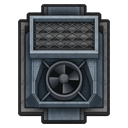
Updraft filter
A powered fan built in a stairwell or elevator landing. Smoke naturally rises through an open shaft; this actively pulls fumes from the room and pushes them up to the level above — like a chimney stack for underground burners. Useless when the shaft is sealed.
Smoke louver
A passive one-way wall louver. Mount it like a vent with the intake facing the room to bleed fumes out slowly — weaker than an exhaust fan, but cheap and always on.
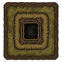
Smoke hole
A sod-and-wicker flue — the oldest chimney there is. Tribal colonies can keep a fire-lit room breathable from day one: any working vent, this one included, guarantees a room stays below harmful smoke levels.

Gas pipe
Linked metal pipe on the conduit layer (drag-to-lay, like power conduits). Carries every Strata gas channel, not just smoke: connected rooms equalize on the same run, outdoor terminals drain the network, and fans/louvers can push into dead-end runs. A nearly invisible hidden gas pipe variant links with ordinary pipe. (Existing saves keep the old smoke-duct buildings; the label is now gas pipe.)

Oxygen pump
Enriches breathable O₂ in a local radius with falloff in natural caverns; sealed colony-built rooms still pressurize more evenly. Pair with CO₂ scrubbing or a shaft exchanger for deep living quarters.
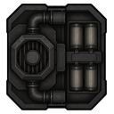
CO₂ pump
Scrubs exhaled carbon dioxide from sealed rooms before colonists feel it.
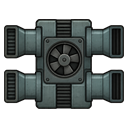
Shaft gas exchanger
Actively drives O₂ up and CO₂ down an open shaft — faster than passive stratification alone.

Gas well & deep-gas generator
Cap a deep vent, fill canisters, burn them for smokeless power — or feed VHGE pipes when that mod is loaded.

Shoring pillar
Braces thick rock roof in a radius so wide halls stop inviting cave-ins.
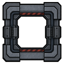
Gas airlock
Blocks room-to-room gas equalization when sealed — isolate a pocket without sealing the whole stairwell.

Ore skip hoist
Powered skip that shuttles chunks and slag to a partner hoist on the linked level.

Fungus farm
Dark grow beds for edible cave fungus. Consumes a little CO₂ and releases a little O₂ while producing food.
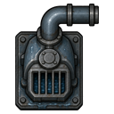
Sump pump
Drains groundwater seep from excavated floors when a level starts taking on water.
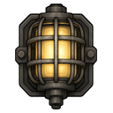
Mine lamp
Bright light with no open flame — safe near deep gas where torches would be suicide.

Shaft bellows & lime scrubber
Unpowered early-game air tools: bellows boost shaft exchange; lime trays scrub CO₂ slowly.
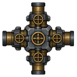
Fluid shaft junctions
Meter water, heat, coolant, helixien, Rimefeller crude/chemfuel, and VEF chemfuel between levels when those mods are loaded.
Building up
Above-ground floors as roof decks — sky is the new rock.
Roof decks & open sky
Level +N is not a full concrete pad. Cells are roof deck (walk/build) only where the floor below is roofed, plus a plaza around the tower shaft; everywhere else is impassable open sky. Building a roof downstairs grows the deck above; removing support under an empty deck tile turns it back to sky (buildings already placed are left alone). Solar and weather work outdoors. Dig stairwells never join an open A1 as “the level below,” and you cannot excavate downward from an upper floor.
Stack direction
Tower shafts move buoyant gas up into A+ and heavy gas down to the floor below. Dig shafts keep their underground behavior. Relays, power, raid pursuit, and the Levels tab treat upper floors as linked colony levels.
Gravship stacks (Odyssey)
Use gravship stairwells on the ship footprint so A+/B+ pockets hitch a ride on launch and rebind on landing. Planet-side dig and tower stairs do not mark a stack as ship-linked.
Smoke ventilation
Underground burners need a path to the sky — or colonists choke.
Natural rise & door venting
Combustion smoke in an unsealed stairwell, tower, or elevator naturally convects upward to the level above, the same way heat does. Sealing the shaft stops it. Open doors to the outdoors also bleed smoke; sealed shafts block tox gas through the portal footprint.
Mod burners auto-patched
At load, fuel-fired and power-generating buildings from other mods get exhaust behavior when they look like burners — so third-party generators and stoves participate in the smoke system too.
Levels tab
Once you open your first basement or upper floor, a new bottom-bar tab lists every floor of the colony.
Jump, rename, and read the floor
Underground floors show as Level −N (B1, B2…); upper floors as Level +N. Each row shows colonist count, hostile count, temperature, and optional hibernation/perf readout. Assign a level role (freezer, barracks, workshop, hospital, storage) so relays bias toward the right floor. Click a row to jump the camera, or press Page Up / Page Down anywhere to flip levels (rebindable) — Page Up from the surface jumps to A1; Page Down from A1 returns to the surface. Use Rename for memorable labels, and drag the corner to resize. Mod settings cover relays, atmosphere, exploration sites, flood events, raid pursuit, cave layout, ancient stairwells, and vacant-level throttle.
Life underground
The deeper you dig, the stranger it gets.
Heat rises, cold falls
Stairwells exchange temperature between the rooms at their top and bottom. A warm level below convects heat upward quickly; a warmer level above only bleeds down slowly. Put your freezer downstairs — generator heat drifts up, not in.
Events know which way is up
Underground levels are sealed rock: solar flares, eclipses, toxic fallout, weather, and drop-pod raids are all suppressed down there. But hiding doesn't end a fight — raiders with nobody left to shoot at will pursue your colonists through the stairwells, unless you seal the hatch.
Threats of the deep
Infestations are the signature danger below, alongside cave-ins, breached gas pockets, gas firestorms, flood seeps, cave breakthroughs, and rare deep raids. On the surface, ground tremors can crack seals downstairs, and deep sieges push raiders toward your shafts.
Riches of the deep
Levels sit on a geothermal gradient — deeper is warmer — and deeper levels hide richer ore. Map gen seeds a few rare, large rich ore nodes in the solid rock after carving (fatter and more common on B2+). Miners can still break into a lucky deep vein, and a wandering prospector may mark a hidden seam on the surface.
Native cave networks
When Biomes! Caverns is not providing layout (or its compat toggle is off), excavated B1+ levels generate chamber-and-tunnel warrens. Depth scales chamber count; hidden gas/geothermal pockets still generate in the surrounding rock. Toggle Natural cave layout in Strata settings.
Burners breathe
Wood-fired and chemfuel generators, campfires, torches, and open fires give off combustion fumes that pool in enclosed rooms as visible black smog. Run one in a sealed room — or anywhere underground — and colonists start choking on a worsening smoke inhalation hediff that turns fatal if ignored. Vent with an open roof, a door to the outdoors, an exhaust fan, a smoke louver, a gas-pipe run, or an updraft filter in the stairwell — a properly ventilated room is guaranteed safe: with any working outlet, smoke never climbs past a light haze. Solar, wind, geothermal, and batteries burn nothing and stay clean. Toggle “show smoke levels” in play settings to read the exact smoke percentage under your cursor.
Atmosphere
Smoke was the start — the deep now tracks a full multi-gas mix.
O₂ rises, CO₂ sinks, deep gas pools
Colonists breathe oxygen and exhale carbon dioxide on underground levels. O₂ is buoyant through open shafts; CO₂ is heavy and sinks. Oxygen pumps enrich a local radius in caverns; sealed player rooms accumulate gas from pumps, pawns, and plants. Foul deep gas pools where it leaks, poisons, and ignites near open flame. Toggle the gas overlay in play settings for a cursor-following mix panel; optional per-room labels live in mod settings. Mine canaries in cages warn you before colonists drop.
Away into the dark
Quest sites and breakthroughs so depth is not only basements.
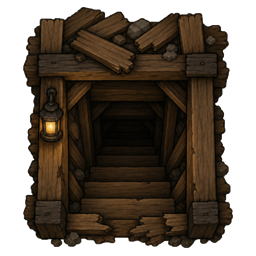
Collapsed mine
A timber stairhead into a fungal warren of insects, scavengers, and mining loot.
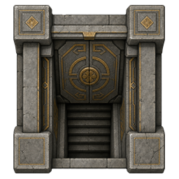
Sealed vault
Frozen ancient chambers guarded by mechanoids or insects — richer hoards at the tip.
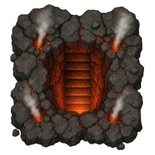
Geothermal vent
A steaming fissure into a volcanic warren with geysers, deep gas, and insects.
Sunken ruins & home discoveries
Sunken ruins remain the flooded-warren classic. At home: cave breakthroughs off rock faces, prospector digs, and the occasional band of lost miners.
Events
Threats and opportunities tied to depth and the world map.
| Event | Where | What happens |
|---|---|---|
| Cave-in | Underground | Unsupported rock roof collapses — shoring pillars reduce the risk |
| Gas pocket | Underground | Miners breach foul deep gas — seal, vent, or ignite at your peril |
| Gas firestorm | Underground | Flammable gas meets open flame |
| Flood seep | Underground | Groundwater floods excavated floors; sump pumps clear it |
| Cave breakthrough | Underground | A natural side cave opens off a rock face |
| Deep vein | Underground | Miners break into a rich ore seam |
| Deep raid | Underground | An insect swarm bursts up through the floor |
| Lost miners | Underground | Survivors (or hostiles) appear in the dark |
| Prospector’s tip / dig | Surface | A prospector marks a seam — later digs can follow |
| Ground tremor | Surface | Rattles structures; can unseal shafts and crack roofs below |
| Deep siege | Surface | Raiders push toward known stairwells |
| Quest sites | World | Sunken ruin, collapsed mine, sealed vault, geothermal vent |
Research
Medieval opens the first basement or roof deck; industrial keeps the deep livable.
Digging down (600 pts) → first basement
└─ Deep excavation (800 pts) → B2+, quest sites
├─ + Electricity → Elevators (B1 or A1) / Shaft power → Fluid shafts
Forced ventilation → fans, updraft, canary cage
├─ Deep life support → O₂/CO₂ pumps, gas exchanger
└─ Deep gas extraction → wells & generators
Rock shoring / Passive life support (medieval)
Deep infrastructure → airlock, hoist, sump, mine lamp
Deep agriculture → fungus farm
| Building | Cost | Power | Research |
|---|---|---|---|
| Excavated stairwell | 60 wood, 30 steel | ties grids | Digging down (B2+ needs deep excavation) |
| Tower stairwell | 80 wood, 40 steel | ties grids | Building up |
| Gravship stairwell | 80 steel, 2 components | ties grids | Digging down (Odyssey) |
| Gravship tower stairwell | 90 steel, 2 components | ties grids | Building up (Odyssey) |
| Elevator | 120 steel, 4 components | 200W | Elevators |
| Shaft power conduit | 60 steel, 2 components | 10W | Shaft power |
| Exhaust fan | 50 steel, 1 component | 100W | Forced ventilation |
| Updraft filter | 40 steel, 1 component | 80W | Forced ventilation |
| Smoke hole | 25 wood | — | None (neolithic) |
| Smoke louver | 20 steel | — | Complex furniture (vanilla) |
| Gas pipe | 10 steel/tile | — | Complex furniture (vanilla) |
How it works
Each level is a real RimWorld map linked by stairwell pairs, built on the vanilla 1.6 pocket-map/portal system.
Real maps, not fakes
Pathfinding, temperature, rooms, and combat all work per-level exactly like vanilla. Every basement and roof deck is a genuine map with its own simulation, linked by the vanilla 1.6 pocket-map/portal system.
Move the pawn, not the job
The AI patches move the colonist to the level where they're needed rather than building fragile cross-map jobs — vanilla AI takes over the moment they arrive, so every failure mode degrades safely.
Framerate-friendly depth
Empty levels quietly throttle their background simulation, so a tall base doesn't tank your framerate.
Logistics by priority
Set stockpile priorities and haulers do the rest: goods flow through the stairwells to the highest-priority storage that accepts them, anywhere in the base. Cargo is only shipped to a level where the storage is actually walkable from the landing — nothing piles up in an unmined bubble.
Power that pools
Shaft ties are demand-driven and flow both ways (up to 2,000W per shaft): a level draws what its grid actually needs, batteries equalize gradually across floors, and a tie that browns out recovers on its own. Batteries on each level are optional but smooth the transfer.
Tips
- Thick rock roofs collapse when unsupported — leave pillars in big halls, just like mountain bases.
- Stairwells cannot be deconstructed while colonists are still below (or still above a tower).
- Raiders who run out of targets on their level will find your stairwells and come down (or up) after you. A sealed stairwell stops them cold — but it stops your colonists too.
- A second shaft that breaks through to an existing level lands in a sealed rock chamber — mine it out to connect it to the rest of the floor. Until then, pawns can always ride back up, and haulers won’t ship cargo there.
- On Level +N, grow the roof deck by expanding roofs on the floor below — open sky never holds buildings.
- With Odyssey, only gravship stairwells place on the ship footprint — colony dig/tower stairs are blocked there so ship-linked floors are unambiguous.
Installation
- Install the Harmony mod first.
- Download with the button above and extract the
Stratafolder into your RimWorldModsdirectory. - Enable Harmony then Strata in the mod list. Load Strata after Harmony.
- Restart the game.